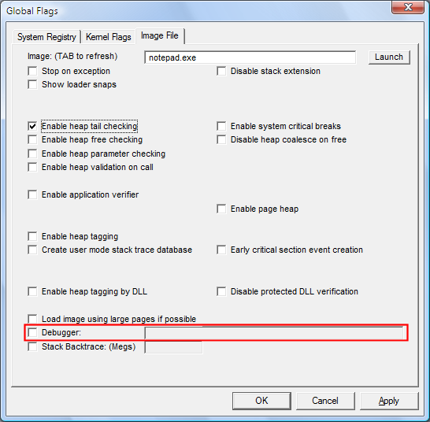

This feature configures the program so that it always runs in a debugger with the specified options. This setting is saved in the registry. It affects all new instances of the program and remains effective until you change it.
 To run a program in a debugger
To run a program in a debugger
-
Click the Image File tab.
-
In the Image box, type the name of an executable file or DLL, including the file name extension,and then press the TAB key.
This activates the check boxes on the Image File tab.
-
Click the Debugger check box to select it.
The following screen shot shows the Debugger check box on the Image File tab in Windows Vista.

-
In the Debugger box, type the command to run the debugger, including the path (optional) and name of the debugger and parameters. For example, ntsd -d -g -G -x or c:\debuggers\cdb.exe -g -G.
-
Click Apply.